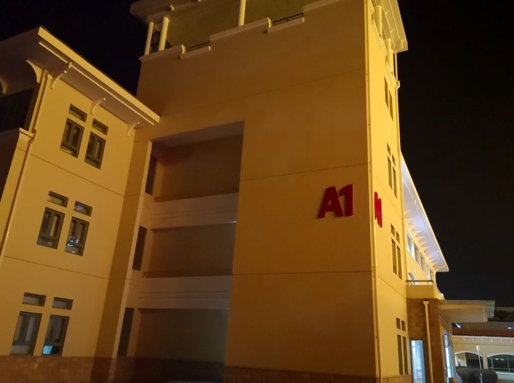
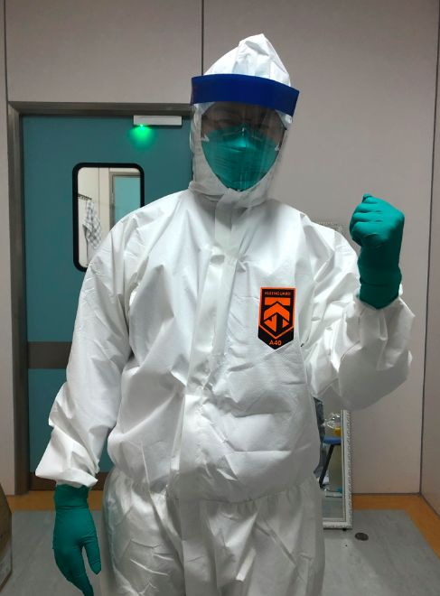

封面报道|四大ICU主任详解病毒 来自最前线的防治之策
原文链接 备份链接 “彭主任，急诊室一个31岁的新冠肺炎病人心脏骤停了，您快来看看，要不要转入ICU。” 2月4日晚上7点半，武汉大学中南医院重症医学科（ICU）主任彭志勇刚从湖北天门考察疫情回到办公室，和财新记者聊了不到十分钟，就 …
编者按：上海市第一人民医院呼吸科的谢国钢医生，2月1日报名了支援上海公共卫生临床中心医疗队。清晨5点，值班的他接到了报到的电话通知，连家都来不及回，就匆匆奔赴了“战场”。要知道，谢国钢医生12月份才刚刚结束为期半年的援滇工作，如今又踏上了新的征程，而且更为艰辛和危险。
还记得年前跟谢医生聊天，问他是不是又没得休假了。他回答我：随时ON CALL。言语形容不出我当下的感受，但作为一个普通市民，有这样的医生守护我们的健康，安全感满满。
撰文 | 谢国钢
得知医院要组建支援上海公共卫生临床中心医疗队的消息后，我第一时间报了名。专业对口，又是共产党员，在当前这种形势下，无需动员，迎着危险必须得上。只是没想到，开赴战场的命令来得如此之快，在医院值24小时班清晨五点多接到了医务处紧急电话，通知我当天上午出发去上海公共卫生临床中心报到，一派不见硝烟的战场气氛。回家准备是来不及了，让家里赶紧收拾一些日常用品送到了医院。
我们这批医疗队包括一位医生和两位护士，医院领导举行了简短的欢送和慰问仪式，张旻主任再三叮嘱我既要做好防护，同时用自己良好的专业能力尽心做好患者的诊治和心理疏导。随后，我们便踏上了征程。

有朋友问我怕不怕。这个真没有。恐惧源于未知，信心来自通晓。既然知道了病毒的传染性，只要思想重视、认真做好防护，就无感染之虞。
还有朋友说我要去受苦了，这个真不算啥，想想我们学科带头人周新教授在除夕之夜就远赴武汉投入抗击新型冠状病毒肺炎的斗争，身先士卒、不辞辛劳。在如此榜样面前，我们就不觉得辛苦了。
来到上海市公共卫生临床中心，我们迅速和其他医院来支援的医疗队汇合。公卫的领导特别强调了医护人员的自身防护与救治病人同样重要，如果医务人员不能做到零感染，那我们抗击新冠肺炎的战役将来就不能说取得完全的胜利。这番话振聋发聩，也对我们提出了非常高的要求。接下来的重头戏顺理成章就是培训隔离服的穿脱流程。在传染病的防治过程中，隔离衣是最有效的防护措施，既保护医护人员自己，又防止病原微生物的播散，避免了交叉感染，因此，熟练掌握隔离衣穿脱过程的每一个步骤和细节是极其重要的。第一次穿戴隔离衣难免手忙脚乱，公卫感染科的老师既严格又耐心，监督我们每个人反复练习，逐个过关才放行。培训和练习整整花了一下午的时间，不过这是非常值得的，准备越充分，我们被感染的机会就越小。
在我们自己的咽拭子采样结果确认阴性后，我们连夜进入了病房大楼，开始熟悉病区环境，了解病人收治流程。进入这栋病房大楼后，我们在接下来的两周内再也不能踏足大楼外，所有的工作和生活均为封闭式管理，当然，电话和消息是畅通无阻的，时刻能与外界保持联系。
第二天，我们正式踏上工作岗位，开始投入紧张的战斗。我所在的A1病房大楼则主要收治轻症患者，卫健委联合专家组每天会对收治的患者进行集体视频查房，而我这里的任务主要就是日常病区查房，把病人的病情变化情况提供给专家组，及时发现重症患者给予更积极的救治。既有大量的文书工作需要完成，又要时刻关注自己管理的病人的检查化验结果和病情变化，工作量还是相当大的。然而，最耗费精力同时风险最大的还是进入隔离病房近距离接触患者。

新病人来了，采集病史可以通过与患者电话完成，但了解病人情况还是必须进入病房面对面完成。每个新病人我们都需要进行体格检查和心电图检查，对患者状况进行评估以决定相应的治疗方案。面戴N95口罩、身着厚重的隔离衣，在封闭的病房里工作，步履迟缓、感觉呼吸都很费力，时间一长，浑身淌汗，护目镜一片茫然。在我的工作经历中，这是最痛苦的工作环境，然而，在这里，你也能遇到患者最期待的眼神。
在我们查房的时候，有拉住你说“医生，你要多来看看我！”的患者，你需要给予温和的宽慰；有烦躁地质问“医生，我的病怎么还没好转？”的患者，你需要给予坚定的鼓励；有的患者因思念家人而潸然泪下，你会心有戚戚；有的患者病情好转，你会与其共享喜悦。
虽然他们看不到我的脸，但在交流中，这冰冷的防护服似乎也有了温度，虽然它笨重、闷热，却有无数的医护人员甘愿着衣、负重工作。穿上这防护服，我们的医护人员是忍者，更是仁者。

习总书记说“越是艰难越向前”，扶危渡厄，乃是医者担当。相信有我们的坚守和国家的坚强后盾，一定能够打赢这场来势汹汹的新冠肺炎疫情的战争！
（本文作者系上海市第一人民医院呼吸科医生）
征集令
“战疫”成败，匹夫有责。
《新民周刊》现面向全国征集新冠肺炎采访对象和真实故事：
如果你是参与抗击新冠肺炎疫情的医护人员或其家属，我们希望聆听你的“战役”故事，也希望传达你的诉求。
如果你是确诊、疑似患者本人或家属，我们希望了解你和家人如何“抗疫”的过程，让外界了解你的真实经历。
如果你是疫情严重地区的普通市民，我们希望展现你的乐观，并倾听你所需的帮助。
如果你是公共服务人员或各类捐助者，我们希望看到你的“最美逆行”，记录下你的无私。
……
抗击新冠肺炎疫情，我们诚征对疫情了解的社会各界人士，提供相关线索，说出你的故事，让我们用新闻留存这一切。
《新民周刊》新冠肺炎线索征集值班编辑联系方式（添加时请简要自我介绍）：
周一：应 琛 微信号：paulineying0127
周二：金 姬 微信号：gepetta
周三：黄 祺 微信号：wxid_bf5mudid7oz322
周四：周 洁 微信号：asyouasyou
周五：孔冰欣 微信号：kbx875055141
周六：吴 雪 微信号：shyshine1105
周日：姜浩峰 微信号：jianggeladandong
新闻是历史的底稿，你们是历史的见证者。期待你的故事、你的线索！

▼
大家还都在看这些
▼
转载请在评论区留言，获得授权！
转载时，须注明作者、出处和微信号


原文链接 备份链接 “彭主任，急诊室一个31岁的新冠肺炎病人心脏骤停了，您快来看看，要不要转入ICU。” 2月4日晚上7点半，武汉大学中南医院重症医学科（ICU）主任彭志勇刚从湖北天门考察疫情回到办公室，和财新记者聊了不到十分钟，就 …
原文链接 备份链接 【财新网】（记者 张帆）2月3日，首都医科大学附属复兴医院心内科重症监护室出现聚集性病例，确诊9例，其中医护人员5例。北京第一时间披露了相关情况。西城区副区长缪剑虹介绍称，目前相关人员已经转到定点医院治疗，以轻症为 …
原文链接 备份链接 编者按： 8天时间，一座可容纳1000张床位的医院正式落成。这就是参照2003年非典期间北京小汤山医院所建的火神山医院。明天，这所医院就将收治病人。 据悉，该医院主要救治确诊患者，开设重症监护病区、重症病区、普通病区， …
原文链接 备份链接 1月28日下午三时，中国青年报·中国青年网记者实地探访武汉市第五医院输液室。 本文约4534字 预计阅读时间12分钟 中青报·中青网记者 王嘉兴 这是一位坚守在抗击新型肺炎一线医生的自述。她经历了疫情初期所在医院的 …
原文链接 备份链接 3月21日。 封城第59天。这么长时间了！ 昨天那么大的太阳，今天突然就阴了。下午还下了点雨。这时节的春雨，对于院子里的树以及花，都还是很需要的。前两三天，武大樱花盛开，树下空荡无人，估计是记者拍了一些照片，同学群里便 …